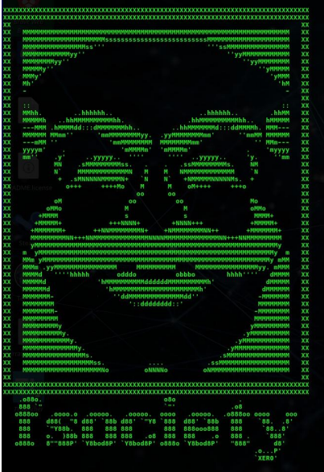
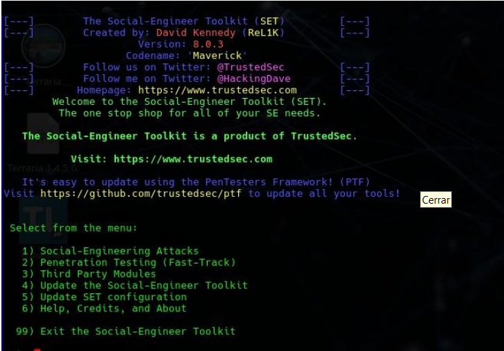
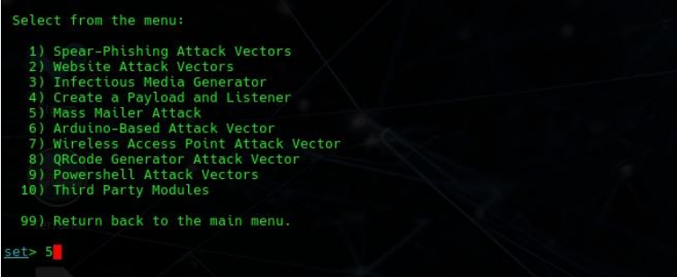
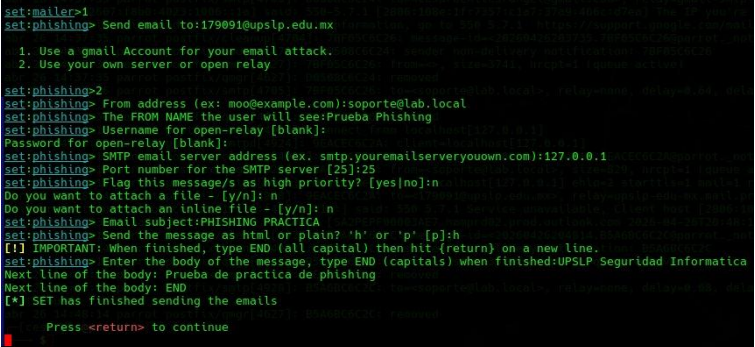
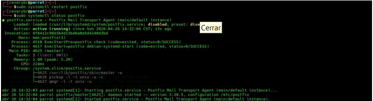
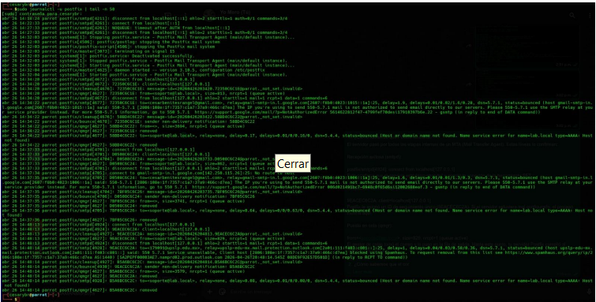
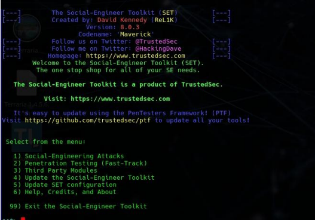

Materia: Seguridad Informática | Semestre: 8º |
Fecha: 27 de abril de 2026 | Tema:SET
Integrantes:
- América Fabiola Guerra Ramírez - 179884
- Bruno Axel Puente Luna - 177876
- Laura Ivon Montelongo Martinez - 177291
- Gustavo Michael Larios Guerra - 178318
- Carol Elizabeth Cortes Beltran - 177203
- Benites Rangel Cesar Yahir - 179091
- Cristian Alejandro Rodriguez Moreno - 181641
En esta práctica se realizó una prueba de concepto enfocada en el despliegue de una campaña de phishing controlada mediante la herramienta Social Engineer Toolkit (SET) y un servidor Postfix. El objetivo principal fue analizar la entrega de correos electrónicos y validar la efectividad de mecanismos de protección perimetral implementados por Microsoft Exchange Online Protection.

Se seleccionó el vector de ataque "Mass Mailer Attack" dentro de SET para realizar el envío de correos de phishing utilizando un servidor SMTP propio.

Se configuró Postfix como servidor MTA local para gestionar el envío de correos electrónicos generados por SET. Posteriormente se validó el correcto funcionamiento mediante registros del sistema.

El correo fue bloqueado por los filtros de Microsoft Outlook Protection debido a que la IP de origen se encontraba catalogada como residencial dentro de Spamhaus.
Esto demuestra la implementación de capas robustas de seguridad perimetral capaces de detectar posibles vectores de phishing provenientes de infraestructura no confiable.
Para validar el funcionamiento del ataque en un entorno controlado, se implementó MailHog como servidor SMTP falso, permitiendo capturar e inspeccionar los mensajes generados por SET sin depender de servidores externos.

La recepción exitosa del correo dentro de MailHog confirmó que el servidor Postfix funcionaba correctamente y que el vector de phishing mantenía intacto el formato HTML y la apariencia visual del mensaje.

Configuración inicial del ataque SET.

Validación del servicio Postfix.

Recepción del correo en MailHog.
Esta práctica permitió analizar el ciclo completo de una amenaza basada en ingeniería social, desde la generación del vector hasta su bloqueo o entrega en un entorno controlado.
Se concluye que la infraestructura de seguridad basada en filtros de reputación representa una barrera efectiva frente a ataques provenientes de infraestructura residencial, aunque el factor humano continúa siendo el principal objetivo de la ingeniería social.
Software encargado de transferir correos electrónicos utilizando SMTP.
Base de datos utilizada para detectar direcciones IP consideradas sospechosas o maliciosas.
Herramienta SMTP falsa utilizada para pruebas y entornos sandbox.
Framework especializado en ataques de ingeniería social y simulaciones de phishing.